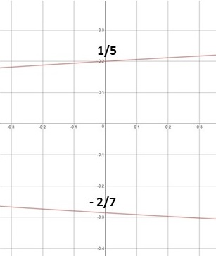

Academic Subjects
➤
Math
➤
Algebra
➤
Quadratic Equations
➤
Solve 35y² + 3y - 2
Find the values of y
35y² + 3y - 2
The y
2
has a coefficient of 35 and
since we can't factor this 35 out of the equation,
we want to multiply this
coefficent
with the
constant c
A
y
2
+
B
y -
C
35
y
2
+
3
y -
2
35
(
2
) = 70
next, we want to find the numbers that can be
multiplied to get 70 and added or subtracted to get 3
here, our numbers are 10 and 7
10(7) = 70 & 10 -7 =
3
now, we'll rewrite the equation using our 10 and 7
35
y
2
+
3
y -
2
35
y
2
-
7
y +
10
y -
2
break the equation in half and factor
35
y
2
-
7
y
7y
(
5y - 1
)
factoring quadratic equations
10
y -
2
2
(
5y - 1
)
our equation breaks down to
(
7y + 2
)(
5y - 1
)
finally, we can finish this by solving for y
1
& y
2
,
also called 'the roots'
this is where the parabola crosses the y-axis
finding real roots
7y + 2 = 0
7y = - 2
y = -
2
/
7
finding real roots
5y - 1 = 0
5y = 1
y =
1
/
5
parabolas
